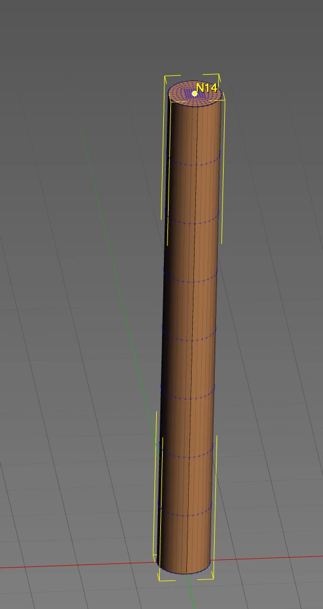
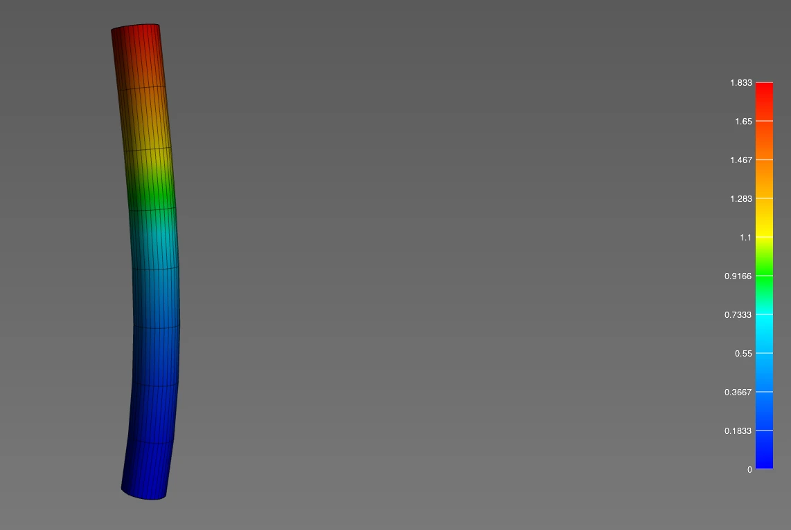
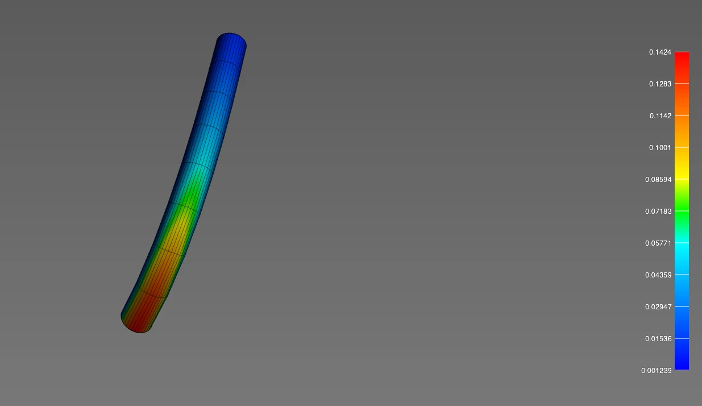

How far can a small-deflection equation take you?
I compared two FEBio cantilever simulations with the linear beam equation. The beam was 10 mm long and 1 mm in diameter, with a clamped base and a transverse force at the free-end center node.
The material was Neo-Hookean, with E = 1 MPa and ν = 0.3. The solid model used 1,536 Hex8 elements and 1,881 nodes. I evaluated separate 0.005 N and 0.0005 N load cases.



Compare the same displacement component.
The analytical equation predicts transverse tip deflection, not total displacement magnitude. My comparison used the magnitude of the FEBio tip displacement component along the loading direction.
| Quantity | 0.005 N | 0.0005 N |
|---|---|---|
| Analytical transverse deflection | 33.953 mm | 3.395 mm |
| FEBio transverse tip deflection magnitude | 7.726 mm | 1.832 mm |
| FEBio maximum displacement magnitude | 8.543 mm | 1.833 mm |
| Discrepancy relative to linear theory | 77.24% | 46.04% |
| Maximum first principal strain | 0.1424 | 0.02282 |




The comparison exposes the model assumptions.
At the higher load, the linear equation predicts a deflection more than three times the original beam length. Even the lower-load prediction is about one-third of that length. Neither is a clean small-deflection benchmark.
The numerical transverse displacement increased by about 4.22× for a 10× increase in force. That response is inconsistent with a purely linear load–deflection relationship and is consistent with the need to consider finite deformation.
A concentrated nodal load, a fully fixed end face, and one mesh density add further limitations. This is an analytical comparison, not experimental validation or a completed mesh-convergence study.